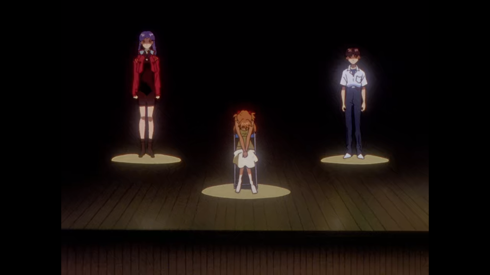
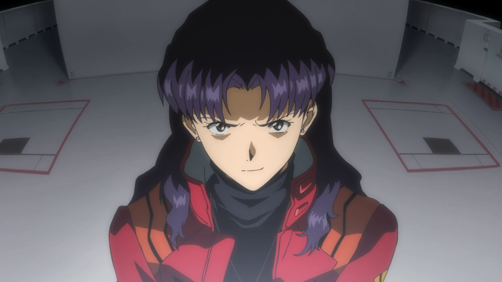

1. Neon Genesis Evangelion (1995)
- - Est composé de 26 épisodes
- - C'est la série originale
Q) Et la Director's Cut?
R) La
Director's Cut rallonge les épisodes 21 à 24. Ces épisodes utilisent des scenes venant
du film récapitulatif
Evangelion: Death. Ces scenes bonus ont permis de faire des remasters,
dont la
Platinum Edition, en 2001
La Platinum Edition est la version Nord Américaine de
Renewal of Evangelion. Vous n'avez pas besoin de faire attention à la version que vous regardez,
car la majorité des services de vidéos en ligne diffusent la Director's Cut.

2. FIN 1: La fin de la série (1995)
- - Est composé des épisodes 25 et 26 de la série originale.
- - Ne contient pas de scène bonus.
Cette fin vise une approche "philosophique" pour terminer la série. Elle n'utilise pas d'animation poussée, donc
ne vous attendez pas à des grands combats de méchas, et réutilise m�me des scènes de la série originale. Ça reste néanmoins une conclusion,
c'est juste qu'elle se focalise sur le développement des personnages.
Suite à la réaction des fans, Hideaki Anno et son équipe ont réalisé le "film"
The End of Evangelion,
qui est une autre conclusion pour la série.

2. FIN 2: The End of Evangelion (1997)
- - Film de 1 heure et 30 minutes.
- - Divisé en deux parties, appelées respectivement épisodes 25' et 26'.
Ce film a été réalisé comme une réponse aux réactions des fans par rapport à la première conclusion de la série,
et est sorti en salle le 19 Juillet 1997.
Elle est composée de deux parties appelées
Air et
Sincerely Yours.
Ce film est considéré comme une approche plus visuelle de la fin d'Evangelion.

3. Films Rebuilds (2007-2020)
Une tétralogie qui prend la forme d'une réécriture de la série originale et de
The End of Evangelion
La série de films Rebuild contient:
- - Evangelion 1.0: You Are (Not) Alone (2007)
- - Evangelion 2.0: You Can (Not) Advance (2009)
- - Evangelion 3.0: You Can (Not) Redo (2012)
- - Evangelion 3.0+1.0: Twice Upon A Time (2020)*
Il existe des versions retravaillées appelées 1.11, 2.22
et 3.33 qui améliore l'animation et corrige quelques problèmes.
Il est recommandé de regarder ces versions en priorité.
*Pas encore sorti en salles

4. Extras
- Evangelion: Death & Rebirth: Evangelion Death
est un récapitulatif de 70 minutes de la série originale. Il contient des scènes réutilisées ensuite pour la
Director's Cut.
Evangelion Rebirth quant à lui contient les 27 premières minutes de
The End of Evangelion
- Le manga Evangelion: Ce manga a été publié de 1994 à 2014, et est composé de 14 volumes. Il est réalisé par
le character-designer d'Evangelion: Yoshiyuki Sadamoto. L'histoire diffère de celle de la série originale.
- Evangelion: Angelic Days: Ce manga est une suite directe à une scène présente dans le 26ème épisode
de la série original, et est assez différente à cause de cette particularité. Il a été publié de 2003 à 2005, et est composé de 6 volumes.